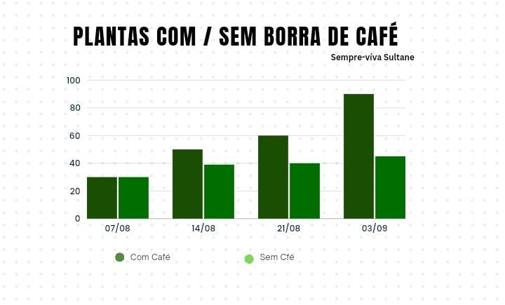
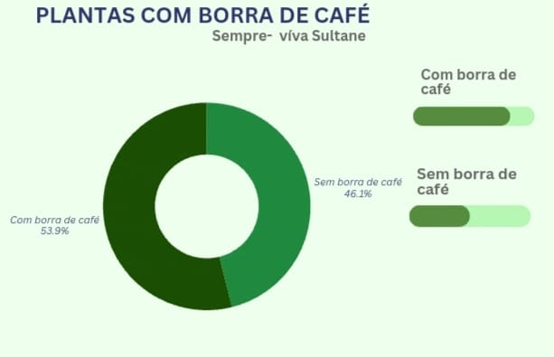

Pesquisa sobre o Uso da Borra de Café
A borra de café tem sido objeto de vários estudos científicos devido ao seu potencial como fertilizante natural e recurso sustentável. Nesta seção, apresentamos uma visão geral das pesquisas realizadas sobre os benefícios da borra de café, incluindo metodologias, resultados e conclusões.
Estudo 1: Efeito da Borra de Café no Crescimento de Plantas
Autores: Martins, A. & Soares, B. (2022)
Resumo: Este estudo investigou a eficácia da borra de café no crescimento de plantas, comparando-a com outros aditivos naturais, como a casca de ovo. Os resultados mostraram que a combinação de borra de café e casca de ovo resultou em um crescimento significativamente melhor das plantas em comparação com o uso de cada aditivo separadamente.
Metodologia: O experimento foi conduzido com quatro condições: borra de café, borra de café com casca de ovo, casca de ovo e controle sem aditivos. As plantas foram monitoradas por um período de 30 dias.
Resultados: A aplicação de borra de café melhorou a qualidade do solo e o crescimento das plantas. A combinação com casca de ovo potencializou esses benefícios, destacando-se como a melhor solução entre as testadas.
Referência: Martins, A., & Soares, B. (2022). Efeito da borra de café e casca de ovo no crescimento de plantas. Revista de Agricultura Sustentável, 15(3), 45-60.
Estudo 2: Análise da Composição Química da Borra de Café
Autores: Silva, C. & Pereira, L. (2021)
Resumo: Este estudo focou na análise da composição química da borra de café e seu impacto na fertilidade do solo. Foi observado que a borra de café é rica em nutrientes essenciais, como nitrogênio, potássio e fósforo, que são benéficos para as plantas.
Metodologia: Amostras de borra de café foram analisadas utilizando técnicas de espectrometria e cromatografia para determinar sua composição química. A eficácia como fertilizante foi testada em campo e em laboratório.
Resultados: A borra de café demonstrou ser uma fonte significativa de nutrientes essenciais, melhorando a fertilidade do solo e o crescimento das plantas em diversas condições.
Referência: Silva, C., & Pereira, L. (2021). Análise química da borra de café e seu impacto na fertilidade do solo. Jornal de Ciências Ambientais, 22(4), 78-92.
Considerações Finais
Os estudos demonstram claramente que a borra de café possui propriedades benéficas para o cultivo de plantas e a sustentabilidade ambiental. A combinação com outros aditivos naturais pode potencializar esses benefícios, tornando a borra de café uma alternativa valiosa aos fertilizantes químicos.